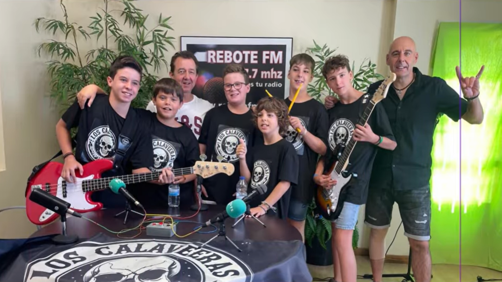
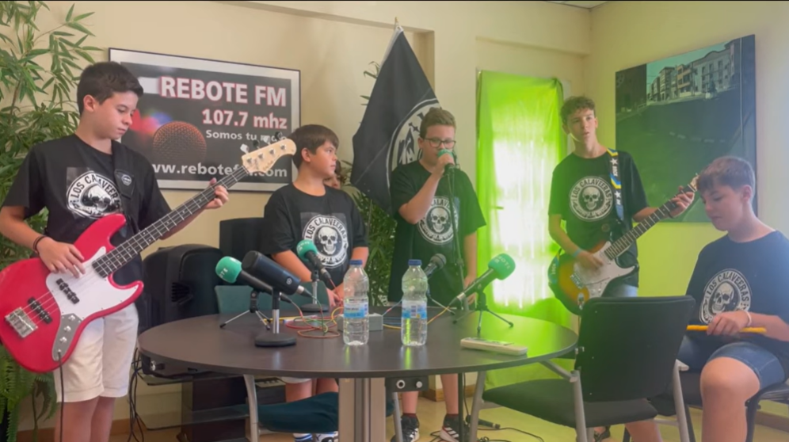

Con apenas 12 años de media, Los Calaveeras pasamos por los micrófonos de Rebote FM para hablar de nuestros inicios, nuestras influencias y las ganas de escenario que tenemos.
Hace poco tuvimos la oportunidad de pasar por los micrófonos de Rebote FM, y la verdad es que fue una experiencia brutal. Somos Los Calaveeras y, aunque todavía somos muy jóvenes (la mayoría tenemos 12 años), tenemos claro que lo nuestro es el rock y que esto no ha hecho más que empezar.
El grupo lo formamos Álvaro,Asier, Axel,Ibai y Pablo, y todo empezó casi sin darnos cuenta. Ensayábamos en el local de la banda Botxorno, en la Plaza de Toros de Alfaro, y poco a poco la gente empezó a llamarnos los calaveras. El nombre viene de un antiguo Trío Calavera que fue creciendo hasta convertirse en lo que somos ahora, con nuestro toque personal: Calaveeras, con doble “E”.
Ensayos, aprendizaje
y buen rollo
Ensayamos normalmente una vez por semana, siempre que podemos juntarnos todos. Algunos llevamos años estudiando música y otros estamos empezando ahora, pero todos compartimos las mismas ganas de aprender y tocar juntos.

Una parte muy importante del grupo es Javi, nuestro manager, que además lleva toda la vida en bandas de rock. Él nos ayuda, nos aconseja y siempre nos recuerda algo clave: trabajar, esforzarnos, tener los pies en el suelo y, sobre todo, seguir siendo amigos.
Nuestro sonido se mueve principalmente entre el rock y el heavy metal, aunque no nos cerramos a nada. Escuchamos desde Iron Maiden hasta The Beatles, The Rolling Stones, Elton John o Robbie Williams. Todo suma y se nota cuando tocamos.

Nuestro sonido
y primeras canciones
Ya tenemos dos temas propios, Haciendas Verdes y Han pasado 30 años. En Rebote FM tocamos una canción en directo y cada vez sentimos más confianza cuando tocamos delante de gente.
Aunque todavía no hemos tocado en conciertos oficiales, tenemos muchos sueños: tocar en Alfaro, en festivales, en grandes escenarios y, quién sabe, incluso fuera de España. Vamos paso a paso, pero con muchísima ilusión.
Queremos dar las gracias a Rebote FM por acogernos tan bien y de paso invitaros a seguir todo lo relacionado con el grupo a través de nuestra web y de nuestras redes sociales.
Porque si algo tenemos claro es que el rock no tiene edad
y Los Calaveeras solo estamos empezando 🎸🔥